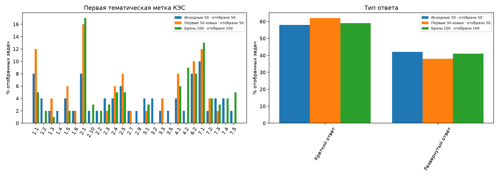
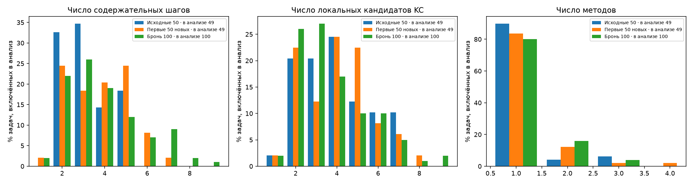
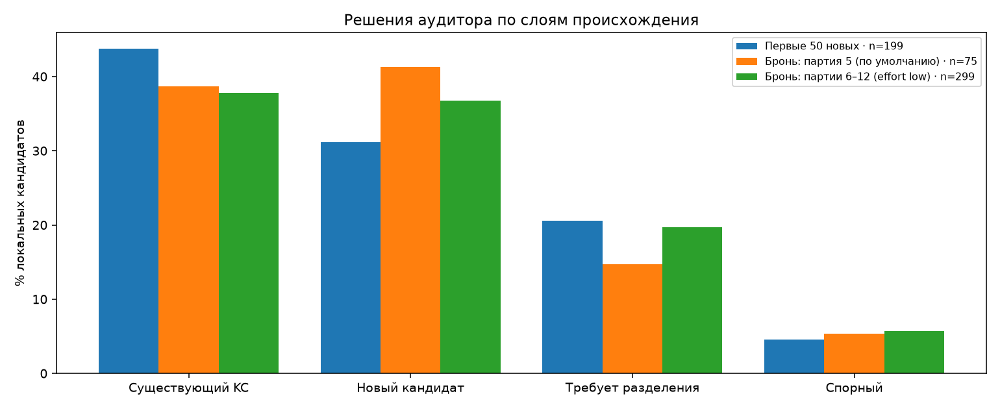
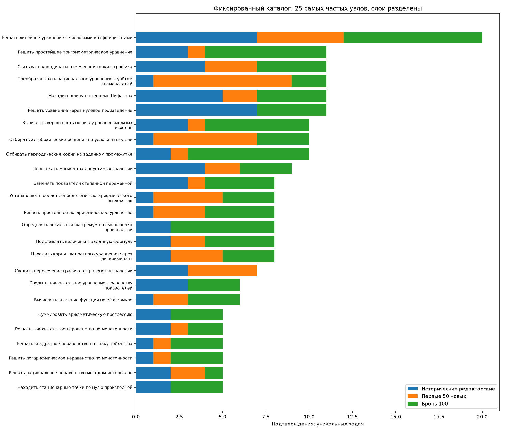

# ФИПИ: накопленная контрольная точка 200 задач Расчёт по сохранённым разборам и аудитам, без новых модельных запросов. Определения метрик — как в [EDA-100](../../runs/2026-11-02-fipi-extension-150/derived/checkpoint-100-v1/report.md): узел каталога считается подтверждённым в задаче, если аудитор поставил `match` без блокировки; частоты — число задач, а не упоминаний; единичный узел — подтверждён ровно в одной включённой задаче. Внешнего эталона нет; статус `solved` не является оценкой точности. ## 1. Слои и готовность | Слой | Выбрано | Полных пар | В частотах | Подтверждённых узлов | Единичные / узлы | Несопоставленные кандидаты | |---|---:|---:|---:|---:|---:|---:| | Исходные 50: редакторские связи | 50 | 50 | 49 | 136 | 101/136 | 0/194 | | Первые 50 новых (запуск 2026-11-02): агентный аудит | 50 | 50 | 49 | 48 | 30/48 | 110/197 | | Бронь Bogdan108, 100 задач (партии 5–12): агентный аудит | 100 | 100 | 100 | 65 | 34/65 | 232/374 | | Бронь, партия 5: Opus, уровень рассуждений по умолчанию | 15 | 15 | 15 | 24 | 19/24 | 46/75 | | Бронь, партии 6–12: Opus, effort low | 85 | 85 | 85 | 54 | 29/54 | 186/299 | | Все новые 150: агентный аудит | 150 | 150 | 149 | 81 | 33/81 | 342/571 | | Смешанный накопленный корпус 200 | 200 | 200 | 198 | 139 | 55/139 | 342/765 | Слой «Исходные 50» содержит редакторские связи основного ассистента; остальные слои — независимый агентный аудит. Смешанный корпус объединяет разное происхождение, поэтому его частоты описательные. ## 2. Что добавилось - Бронь добавила 100 включённых задач. Узлов каталога, подтверждённых в них: 65; из них не подтверждённых в EDA-100: 1 (`literal_d5e287608dd5`). - Подтверждённых узлов в смешанном корпусе: 138 (EDA-100) → 139 (EDA-200); единичных: 76/138 → 55/139. - Кандидаты брони, которым аудитор не нашёл узла (`new_candidate`): 141. Это локальные предложения отдельных задач, а не число уникальных новых навыков: межзадачной консолидации не было. ## 3. Изменения относительно EDA-100 по тем же определениям | Показатель | Первые 50 новых | Бронь 100 | Партия 5 (по умолчанию) | Партии 6–12 (effort low) | |---|---:|---:|---:|---:| | Существующий KC | 87/199 (44%) | 142/374 (38%) | 29/75 (39%) | 113/299 (38%) | | Новый кандидат | 62/199 (31%) | 141/374 (38%) | 31/75 (41%) | 110/299 (37%) | | Требует разделения | 41/199 (21%) | 70/374 (19%) | 11/75 (15%) | 59/299 (20%) | | Спорный | 9/199 (5%) | 21/374 (6%) | 4/75 (5%) | 17/299 (6%) | | Медиана шагов | 4 | 3,5 | 5 | 3 | | Медиана локальных KC | 4 | 3 | 5 | 3 | | Задачи с неполным сопоставлением | 45/49 (92%) | 90/100 (90%) | 15/15 (100%) | 75/85 (88%) | Различия между слоями нельзя приписать одной причине. Слои различаются составом задач (позиции очереди 1–50 и 51–150 выбраны случайно из одного допустимого остатка, но выборки малы), исполнителями (агенты запуска 2026-11-02 и агенты брони), моделью и уровнем рассуждений (партия 5 — уровень по умолчанию, партии 6–12 — `effort: low`), а также ходом работы (в части партий аудиторы прерывались и продолжались или перезапускались). [Состав выборки](figures/01-composition.png). ## 4. Контрольные задачи, исключения и спорные случаи - Контрольные задачи брони, сверенные с ожиданиями, записанными до авторских ответов: 24; `match` — 20, `match_after_review` — 4 (92FD74 (партия 7), EC9829 (партия 9), 0448F1 (партия 11), 9BA813 (партия 12)). Во всех случаях `match_after_review` расхождение было только в записи ответа из нескольких пунктов или в нормализации строки; сравнение сделано после просмотра ответа и слепой проверкой не является. - Приняты после просмотра при статусе автора не `solved`: 321FCD (ответ совпал с заранее записанным ожиданием, блокирующих замечаний нет; включены в частоты, как в кратком EDA-150). - Исключены из основных частот смешанного корпуса: - eFF32e: исторический partial или исключение прежней рецензией - C41083: блокирующее замечание аудита - В брони авторы записали предупреждения в 24 задачах; аудиторы — 86 замечаний, блокирующих 0. Спорных решений аудитора (`uncertain`): 21. Подробности — в [карточках](index.html) и [таблице кандидатов](tables/candidates.csv). - Задачи с чтением координат по рисунку (например, 3F02c4, FFE757, F9EA20) остаются зависимыми от качества изображения; в партии 5 модели Haiku и Sonnet ошиблись в чтении 3F02c4 (калибровочные попытки, в корпус не входят). ## 5. Какие выводы пока невозможны - Нельзя оценить точность решений: внешнего эталона нет, контрольные ответы проверены выборочно (3 задачи на партию). - Нельзя считать `new_candidate` новыми уникальными навыками и сравнивать их число между слоями как прирост каталога. - Нельзя приписать различия долей статусов аудита модели или уровню рассуждений: слои отличаются составом, а партия 5 мала (15 задач). - Совместная встречаемость и переходы между узлами — описательные; они не доказывают порядок изучения или зависимость навыков. ## 6. Самопроверки - Пересчёт EDA-100 из тех же записей совпал с сохранённой сводкой: True; частоты: True. - Пересчёт частот узлов на 150 задачах совпал с кратким EDA-150: True (148 включённых задач). ## Материалы - [Карточки задач брони и графики](index.html); карточки первых 50 новых — в [EDA-100](../../runs/2026-11-02-fipi-extension-150/derived/checkpoint-100-v1/index.html); разборы исходных 50 — в [EDA-50](../../runs/2026-10-31-fipi-50x1/derived/index.html). - Таблицы: [задачи](tables/tasks.csv), [кандидаты](tables/candidates.csv), [частоты](tables/frequencies.csv), [совместная встречаемость](tables/cooccurrence.csv), [переходы](tables/transitions.csv), [состав](tables/composition.csv), [статусы аудита](tables/audit_statuses.csv), [расшифровка КЭС](tables/kes-codebook.csv). - Исполненный ноутбук пересчёта: [review.ipynb](review.ipynb). Входы и хеши: [provenance.json](provenance.json), партии: [batches.json](batches.json). Первая метка КЭС — первая тематическая метка в записи банка, не обязательно главная тема задачи. Метки КЭС и шаблоны — описательные характеристики, не подтверждение одинакового метода.




Исходные 50: EDA-50. Первые 50 новых: EDA-100.